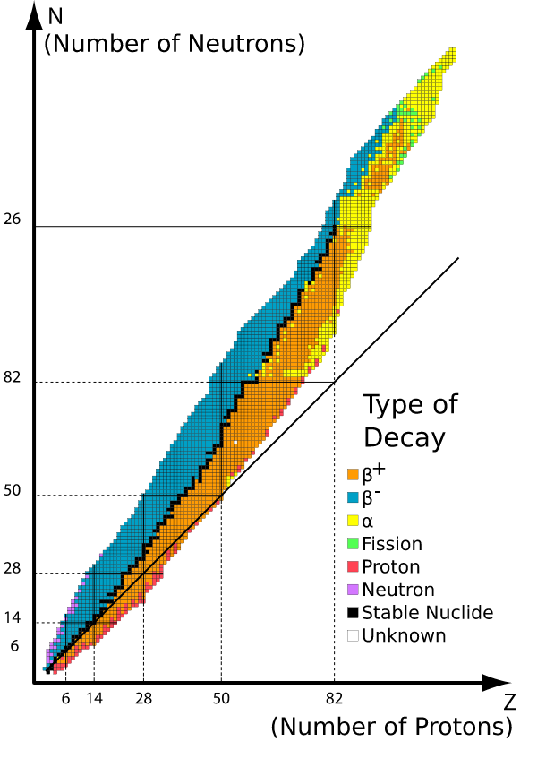

MF2 - predavanje 2024/04/29
Table of Contents
1. Jedrski razpad
… od zadnjič
1.1. Posplošitev \( \alpha \) razpadov - spontani razcep
Imamo jedro elementa \( X \), ki spontano razpade v dve lažji jedri
\begin{equation} \label{eq:90} X \to Y + Y' \end{equation}Za razliko od prej obravnavanih razpad, kjer smo imeli eno masivno jedro in nek lahek delcev, tukaj temu ni več tako. Razpad se lahko zgodi tudi v dve jedri primerljivih mas.
Ohranitev kvantnih števil
\begin{equation} \label{eq:93} ^A_Z X \to ^{A'}_{Z'}Y' + ^{A - A'}_{Z - Z'}Y \end{equation}Ker ničesar ne trkamo v jedro, mora biti reakcija eksotermna. Sproščena energija je tako
\begin{equation} \label{eq:94} - Q = E_V(A, Z) - E_V(A', Z') - E_V(A- A', Z - Z') > 0 \end{equation}Za kvalitativno razumevanje ne potrebujemo znanja lupinastega modela jedra (kapljični model zadošča). Zaradi premikanja delcev v jedru, se oblika jedra deformira in ko je ta dovolj velika (odbojna sila med protoni se veča in manjša z deformiranjem). V nekem trenutku odbojna sila prevlada in jedro razpade.
Na kako velikih jedrih se to začne dogajati?
\( \beta^+ \) razpad se zgodi pri delcih, ki so tik pod črto stabilnosti, \( \beta^- \) razpad je nad črto stabilnosti in \( \alpha \) razpad se dogajajo po diagonali.

Zelo daleč stran od diagonale je tudi pod diagonalo izsevanje protona, nad diagonalo pa izsevanje nevtrona.
Tipično prevladujejo \( \alpha \) razpadi.
Tehnološka uporaba razpadov - najbolj uporabljen je razcep, vendar nima smisla čakati na spontan razcep.
2. Jedrske reakcije
Za razliko od jedrskih razpadov sedaj nimamo več samostojnega jedra, ampak imamo pomoč.
Imamo jedro \( X \) in nek projektil z oznako \( a \). Ta projekti pospešimo in usmerimo, da trči v jedro. V končnem stanju dobimo končno jedro ter enega ali več delcev, ki odletijo iz jedra (po reakciji).
Ločimo tri tipe jedrskih reakcij
elastično sipanje (prožno sipanje)
\begin{equation} \label{eq:95} a + X \to a + X \end{equation}Pri tem sipanju se kinetična energija projektila se ohranja (v težiščnem sistemu).
neelastično sipanje
\begin{equation} \label{eq:96} a + ^A_ZX \to a' + ^A_ZX^{*} \end{equation}Nukleoni se ohranjajo. \( a' \not = a \), ampak v resnici ne. Del kinetične energije projektila vzbudi jedro.
“prave” jedrska reakcija
\begin{equation} \label{eq:97} a + X \to b + Y \end{equation}Velja, da je \( X \not = Y \) in \( a \not = b \).
Kaj je zanimivo pri nas za meriti pri jedrskih reakcij? (Pri razpadu je bilo št. razpadov) Tukaj nas zanima verjetnost za reakcijo (sipanje) na časovno enoto (katerokoli od prej naštetih 3 reakcij).
Označimo \( N_{\kappa} \) število reakcij.
Imamo tarčo, ki vsebuje \( N_J \) število jeder znotraj preseka \( S \), ki je presek curka in v to tarčo usmerimo curek projektilov s številom \( N_I \). Če imamo konstanten tok projektilov je bolje uporabiti zapis \( \frac{\mathrm{d}N_I}{\mathrm{dt}} \).
\begin{equation} \label{eq:98} \frac{\mathrm{d}N_{\kappa}}{\mathrm{dt}} = \frac{N_J}{S} \frac{\mathrm{d}N_i}{\mathrm{dt}} \end{equation}S10.2
Za konec dodamo še sipalni presek \( \sigma_{\kappa} [m ^2] \). Tipična enota je \( 1 barn = 10^{-23} m ^2 (b) \) (ang. barn pomeni skedenj). Sipalni presek je odvisen od energije projektila in pa sipalnega kota.
Definiramo
\begin{equation} \label{eq:99} \frac{1}{S} \frac{\mathrm{d}N_I}{\mathrm{dt}} = j_I \end{equation}kar je gostota toka projektilov.
S10.3 prikazuje definicijo sipalnega kota.
2.1. Inducirani jedrski razcep (fizija)
Spontani razcep je počasen proces (prej razpadejo kot \( \alpha \) kot pa spontano). Vzbudimo jedro preko sipanja (bodisi s fotoni \( \gamma \), \( e^- \), \( p^{+} \), ali nevtroni \( n \)). Problem fotonov je, da imajo premalo energije, proton in elektronov je, da so nabiti delci (in ukrivljajo svojo tirnico gibanja). Nevtroni so idealni, saj ne čutijo Coulumbovega odboja.
Kaj je bolje? Visokoenergijski nevtron, ki lahko privede več energije, ali nizkoenergijski nevtron?
Izkaže se, da energija ni pomembna (saj je razpad eksotermna reakcija). Naš delec potrebujemo zgolj in izključno, da jedro porinemo čez rob in razpade. Tako so najboljša izbira nizkoenergijski nevtroni(počasni, termični), ki jih dobro ciljamo. Počasni nevtroni se dolgo časa zadržujejo v okolici jedra in imajo velik sipalni presek.
2.1.1. Primer
Sipanje nevtronov na jedrih urana \( ^{235}U \).
\begin{equation} \label{eq:100} ^{235}_{92}U_{143} + ^1_0n_1 \rightarrow ^A_Z X_N + ^{236 - A- \mathcal{N}}_{92 - Z}Y_{144 - \mathcal{N}} + \mathcal{N} ^1_0z_1 \end{equation}Jedroma \( X \) in \( Y \) se reče razcepka in sta lahko stabilna ali pa razpadata dalje.
Zadnji člen so sproščeni nevtroni, ki lahko sprožijo nove razcepe - verižne reakcije.
Povprečna vrednost za \( \left\langle \mathcal{N} \right\rangle = 2.47 \).
V nuklearki se uranove sredice obdajajo z nekim mehkim materialom (saj večino kinetične energije pri razpadu odnese lažje jedro). Te snovi (tipično voda, grafit) se reče moderator.
Na PSE se najde \( ^{238}_{92}U \) se raje ne razcepi. Urana \( ^{235}_{92}U \) je v naravi zgolj \( 0.72\% \). Potrebno je ločiti izotopa s centrifugo. Uporabimo plin mešanico urana in fluora \( UF \). Uporabimo difuzijo tega plina skozi luknjičaste opne in v večih ciklih, ker je statistično proces. S centrifugo povzročimo tlak, ki sili te delce skozi opno (lažje delce odnesejo).
2.2. Zlivanje jedra (fuzija)
Vodilna jedrska reakcija v zvezdah. Zvezda se zaradi gravitacije želi sesesti, s tem se v središču naredi ogromen tlak.
Imenujemo jo termična reakcija. Najbolj pogosta reakcija v zvezdah je zlivanje vodika
\begin{equation} \label{eq:101} ^1_0 H_{0} + ^1_1H_0 \rightarrow ^2_1H_1 + e^+ \nu_e (+ 0.42 MeV = - Q) \end{equation}\( ^2_1H_1 \) je devterij. Za zlivanje jedra je potrebno premagati Coulumbski odboj - potrebni so visokoenergijski delci.
Reakcija poteče samo, če je \( E_k \ge 1 keV \), kar ustreza temperaturi \( T \ge 10^8 K \)
V 2. koraku te reakcije
\begin{align} \label{eq:102} ^2_1 H_1 &+ ^1_0H_0 \rightarrow ^3_2He_1 + \gamma (+ 5.5 MeV ) \\ ^3_2He &+ ^3_2He \rightarrow ^4_2He + 2 ^1_1H_0 (+12.8 MeV) \label{al:1} \end{align}Začeli smo z dvema vodikoma, potem smo uporabili še tretji vodik za tvorjenje helija (za vsake 3 vodikova jedra nastane 1 foton in pol jedra helija). Ko vodika zmanjka, kar pomeni, da ni več dovolj termičnega tlaka, ki bi se upiral gravitacijskemu, se zvezda sesede, in posledično se sredica segreje.
Pri višjih temperaturah (tlakih) se zlivajo tudi težja jedra (začenši z \( He, \, ^8Be, \, ^{12}C, \ldots \)) (cikli)
Lahko formuliramo pogoje za (termične) verižne reakcije. Relavantna količina, ki jo merimo, je število reakcij na časovno enoto \( \frac{1}{V} \frac{\mathrm{d}N_{\kappa}}{\mathrm{dt}} \). Imamo plin jeder (in ne atomov), ki jo imenujemo plazma in ima \( N \) delcev.
\begin{equation} \label{eq:103} \frac{1}{V} \frac{\mathrm{d}N_{\kappa}}{\mathrm{dt}} = \frac{N_1}{V} \frac{N_2}{V} \left\langle v_{12}\sigma_{\kappa} \right\rangle \end{equation}Tukaj moramo povprečiti čez vse možne medsebojne hitrosti in ker je \( \sigma_{\kappa} = \sigma_{\kappa}(v) \), se to vključi v povprečje.
Želimo imeti reakcijo, ki samo sebe poganja, kar pomeni, da mora biti reakcija sposobna segrevati samo sebe. Definiramo sproščeno energijo na enoto volumna \( V \) v časovni enoti \( \tau \), ki segreva plazmo.
Primer za \( n_1 = n_2 \), kar je \ref{eq:101} in \ref{al:1}. Velja, da je \( n = \frac{N}{V} \).
\begin{equation} \label{eq:104} 2\frac{3}{2}n k_BT < n ^2 \left\langle v_{12} \sigma_{\kappa} \right\rangle \left| Q \right|\tau \end{equation}Času \( \tau \) rečemo tudi čas ujetja plazme. Neenakost je zato, ker ne moremo zagotoviti, da se bo vsa sproščena energija porabila za segrevanje plazme.
Neenakost \ref{eq:104} lahko zapišemo tudi drugače:
\begin{equation} \label{eq:105} n \tau > \frac{3k_BT}{\left\langle v_{12}\sigma_{\kappa} \right\rangle \left| Q \right|} \end{equation}kjer je \( n \) gostota plazme. Ta enačba se imenujo Lawsonov pogoj za vzdrževanje plazme (in ne za sproščanje uporabne energije).
2.2.1. Primer
Na Zemlji poskušamo raje cikel zlivanja devterija in tritija, ker je možno pri manjših temperatura
\begin{equation} \label{eq:106} ^2_1H_1 + ^3_1H_1 \rightarrow ^4_2He_2 + ^1_0n_1 + \left| Q \right| = 17.6MeV \end{equation}Za zvezde, kjer je \( T = 10^8K \) in \( \left\langle v_{12} \sigma \right\rangle = 10^{-22} m ^2/s \) iz česar sledi, da je \( n \tau > 10^{20} s/ m ^2 \)